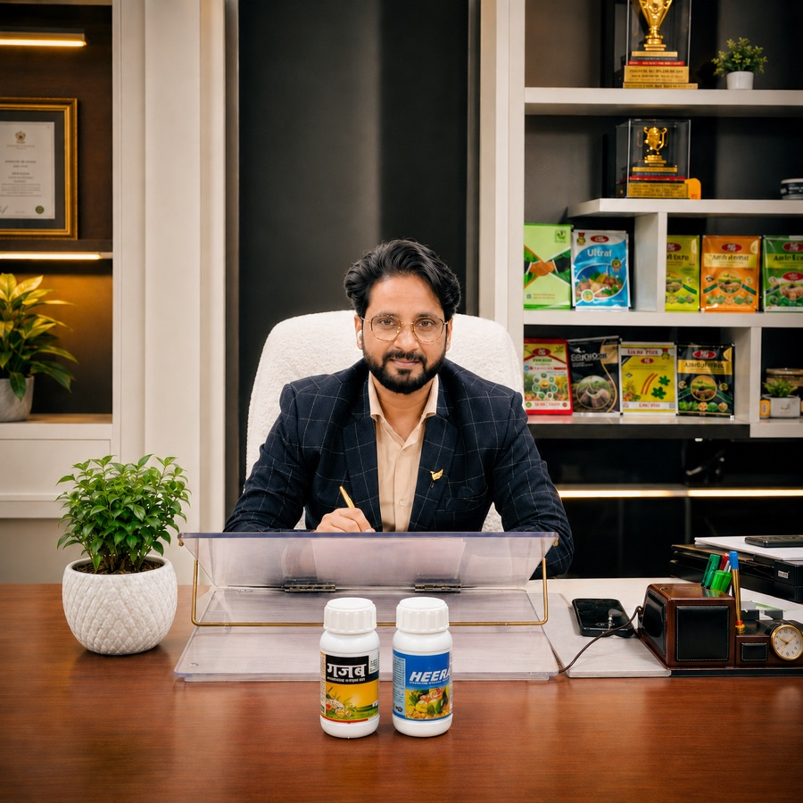
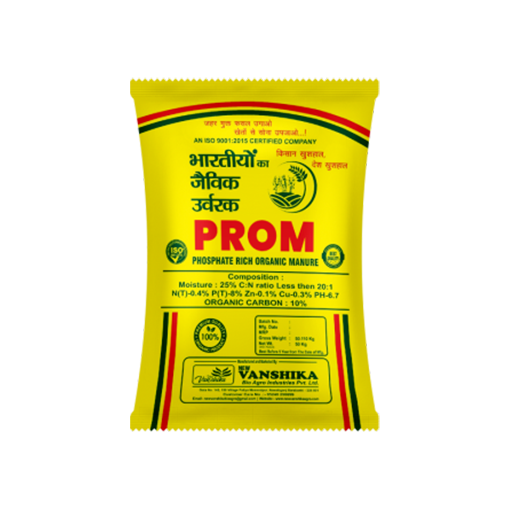
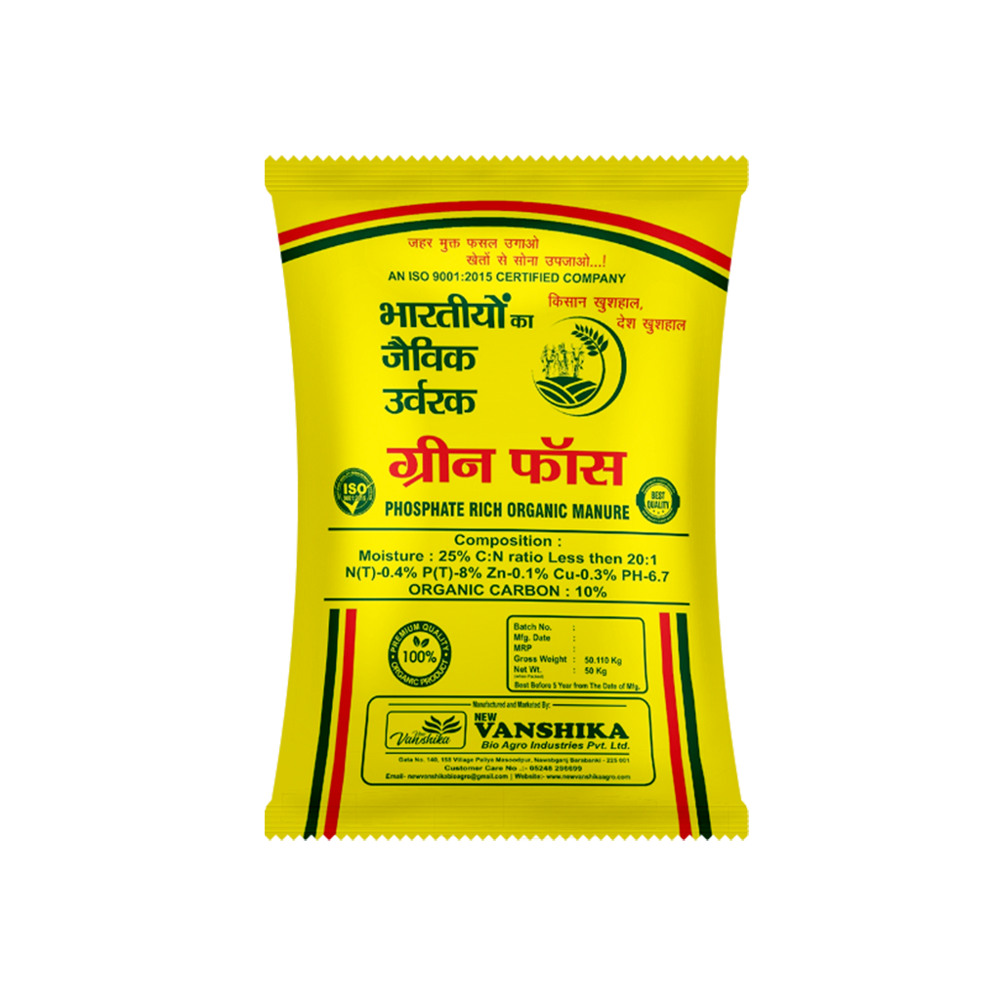
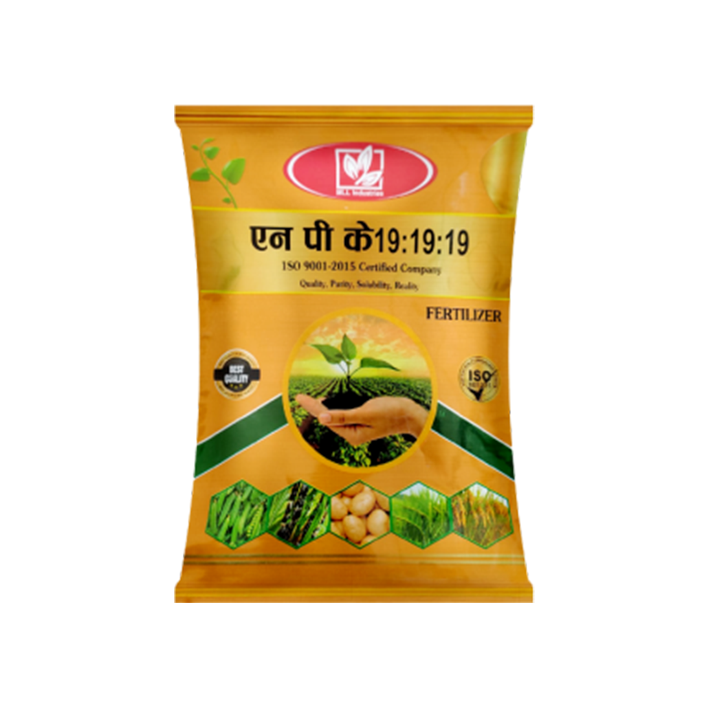
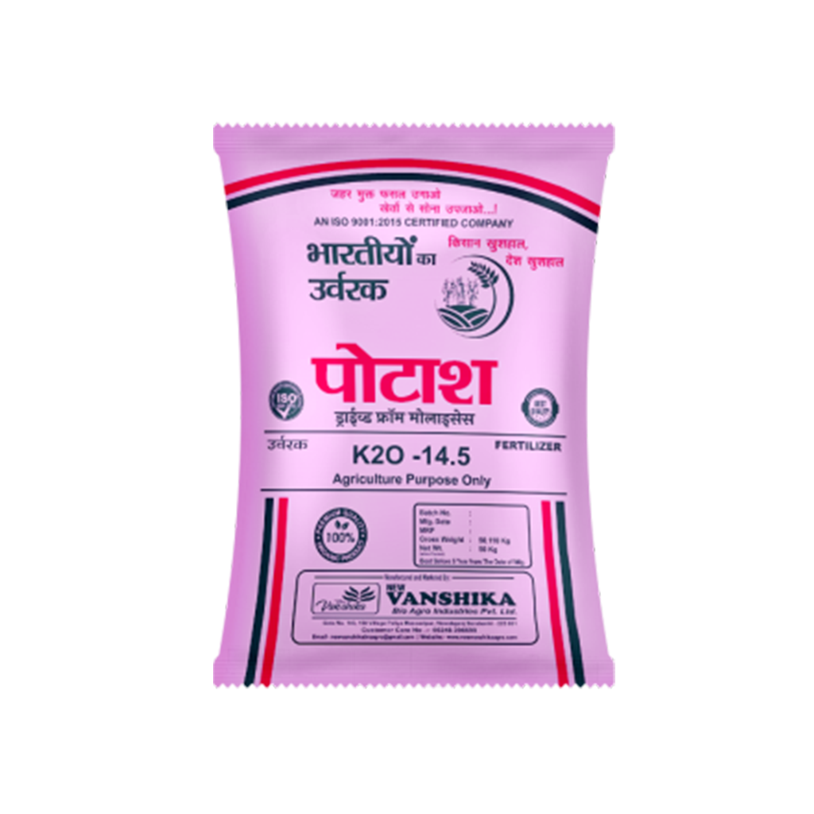
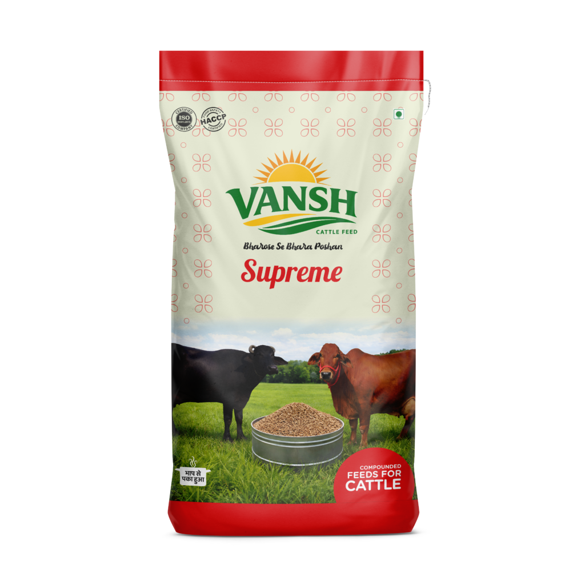
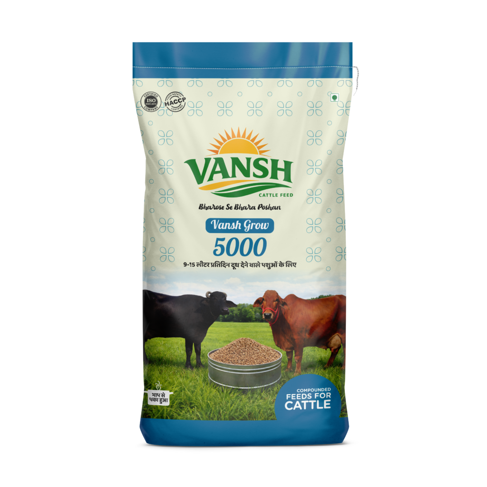
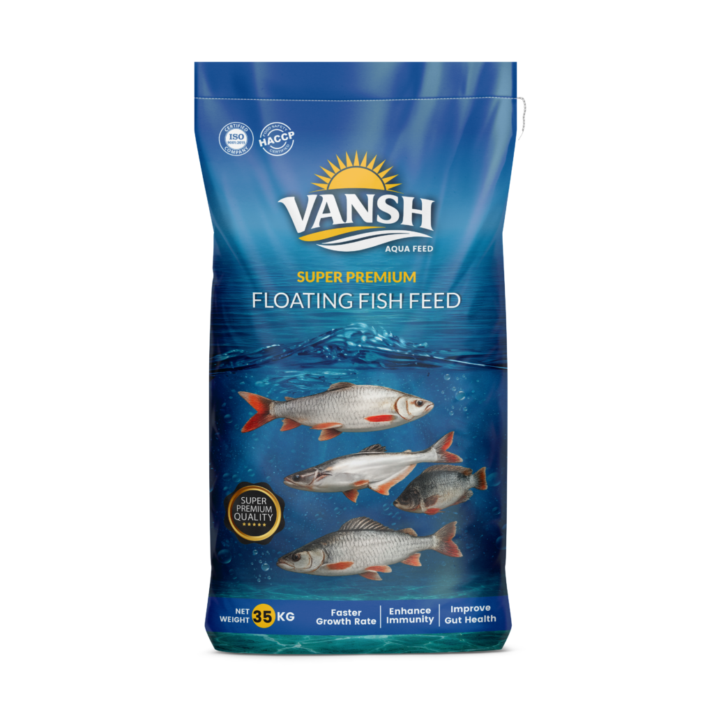

MLL Agro Industries Pvt. Ltd.
Produces organic inputs, fertilizers and soil health solutions for crop nutrition and responsible field productivity.
Organic Inputs & FertilizersLed by MLL Agro Industries Pvt. Ltd. in Barabanki, the group manufactures fertilizers, organic inputs, bio-agro solutions, aqua feed and animal nutrition for India and Nepal-facing markets.
MLL Agro Industries anchors the group’s fertilizer, organic input and crop nutrition focus for responsible field productivity.
Floating aqua feed ranges for pond operations, practical feeding routines and commercial fish culture.
Cattle and poultry feed lines remain part of the group’s practical farm supply portfolio.

"At Vansh Group, our focus is disciplined agro-input manufacturing, practical field products and long-term relationships with farmers, dealers and business partners."
MLL Agro Industries leads our organic input and soil-health work, while Fish Gold Industries and New Vanshika Bio Agro support feed, aqua and bio-agro categories with the same supply discipline.
As the group grows from Barabanki into wider Indian and Nepal-facing markets, we remain focused on responsible manufacturing and dependable business conduct.
The group’s primary focus is organic agriculture, fertilizers and soil health through MLL Agro Industries, supported by feed, aqua and bio-agro manufacturing divisions from Barabanki.
Produces organic inputs, fertilizers and soil health solutions for crop nutrition and responsible field productivity.
Organic Inputs & FertilizersManufactures aqua feed, cattle feed, poultry feed and animal nutrition products for practical farm and dealer supply.
Feed & Animal NutritionDevelops bio solutions and crop nutrition inputs aligned with sustainable agriculture and field-level usability.
Bio Solutions & Crop NutritionThe group supports B2B requirements including bulk manufacturing, dealer/distributor supply, private labeling and contract manufacturing discussions.
Explore focused manufacturing pages for agro inputs, fertilizers, pesticides, cattle feed and fish feed across Uttar Pradesh and India.
A balanced view of MLL agro-input products alongside established feed and aqua lines for dealer and farm supply.

Phosphate-rich organic manure for soil nutrition programs, dealer supply and field application.
View Product
Crop nutrition input positioned for phosphorus support and practical soil-health use.
View Product
Balanced nutrient support for crop programs that need regular availability and clean packing.
View Product
Potash-focused input for crop strength, field programs and dependable distributor movement.
View Product
Daily cattle nutrition manufactured for steady intake, milk support and dependable dealer movement.
View Product
Growth-focused cattle feed designed for working farms that need balanced nutrition and reliable supply.
View Product
Floating aqua feed packed for controlled pond feeding, feed visibility and practical farm handling.
View ProductCommercial aqua feed packing suited for regular pond operations, dealer stocking and bulk dispatch.
View ProductHover to pause · Click cards to explore
View All 50+ ProductsTrust is built through repeat supply, practical products, clear communication and manufacturing discipline that partners can rely on.
Feed and crop-input ranges are developed around nutrition needs, application context and field usability.
Batch preparation, packing discipline and dispatch checks support repeatable product quality.
Dealer and distributor relationships are supported with practical availability and regular supply planning.
Business, product and service concerns are routed through phone, WhatsApp and email channels.
Clear product categories, business inquiry paths and documented communication help partners plan confidently.
Products are represented for real farm routines, dealer stocking needs and regional agricultural conditions.
We welcome structured business discussions for feed, fertilizer, soil-health and bio-agro product distribution across active farming markets.
For product enquiries, dealer coordination or service concerns, the team provides clear contact routes and practical follow-up.
Concerns are reviewed with the relevant product or business team before response.
A measured network built through manufacturing discipline, dealer availability and growing supply into India and Nepal.
Farmers Reached
Dealer Touchpoints
Product SKUs
Nepal Export Market
Operating Companies